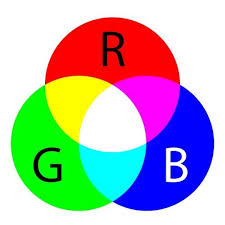

O que é RGB?
RGB (Red, Green, Blue) é um modelo de cores aditivo usado principalmente em dispositivos eletrônicos, como monitores e TVs. As cores são criadas pela combinação de luz vermelha, verde e azul em diferentes intensidades.
Exemplos de Cores em RGB
Imagens em RGB
Como o RGB funciona no pixel?
A palavra pixel é uma combinação dos termos “picture” e “element”. Ou seja, “elemento de imagem”.Cada pixel é baseado nas três cores básicas do padrão RGB: vermelho, verde e azul. Monitores LCD convencionais trabalham em uma profundidade de 8 bits. Isso significa que cada uma das três cores básicas possui 256 tonalidades. Sendo assim, é possível combinar pixels para obter mais de 16 milhões de cores diferentes.
O que é CMYK?
CMYK (Cyan, Magenta, Yellow, Key/Black) é um modelo de cores subtrativo usado principalmente na impressão. As cores são criadas pela subtração de luz, onde a combinação de ciano, magenta, amarelo e preto resulta nas cores desejadas.
Exemplos de Cores em CMYK
Imagens em CMYK
Diferenças entre RGB e CMYK
| Característica | RGB | CMYK |
|---|---|---|
| Modelo de cor | Aditivo | Subtrativo |
| Uso principal | Monitores e telas | Impressão |
| Composição | Vermelho, Verde, Azul | Ciano, Magenta, Amarelo, Preto |